XVII ANIVERSARIO · FIC UNCP
17 años
construyendo
el futuro.
Cuatro días de conocimiento, encuentros y nuevas ideas. Celebramos la historia de Ingeniería Civil y todo lo que aún podemos construir juntos.
Av. Mariscal Castilla N.º 3909El Tambo · Huancayo, Perú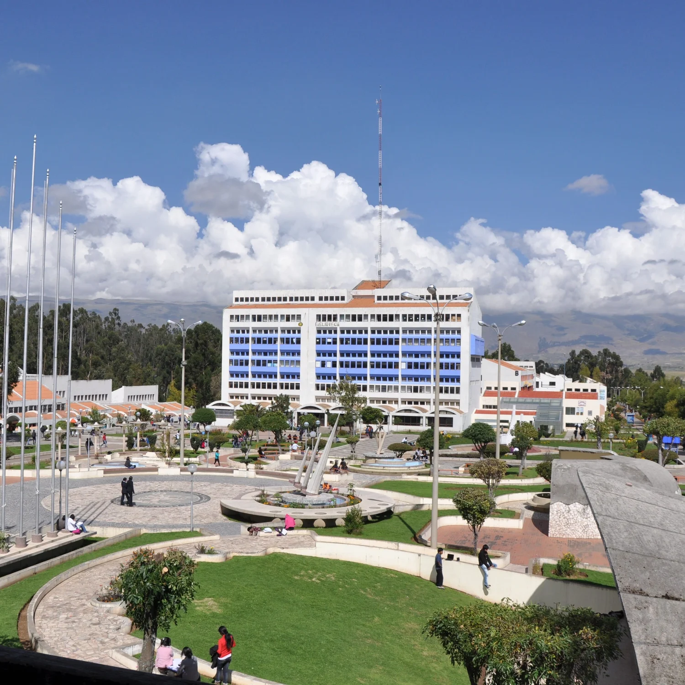
construimos nuestro mañana.22—25SETIEMBRE 2026
Acto solemne · Conferencias · Cultura
01 / NUESTRA CELEBRACIÓN
17 años de ideas
que toman forma.
La ingeniería empieza con una pregunta. Crece con el conocimiento. Y cobra sentido cuando transforma la vida de las personas.
Este aniversario reúne a la comunidad de Ingeniería Civil en torno a la gestión de proyectos, las estructuras, la geotecnia, la hidráulica y una infraestructura más sostenible.
Una ocasión para aprender de nuevas experiencias y reconocer el camino recorrido por estudiantes, docentes y egresados de la UNCP.
Conoce nuestra historia →02 / ENCUENTRA TU PRÓXIMA IDEA
Tu encuentro con
nuevas ideas.
Del acto solemne a las nuevas fronteras de la ingeniería. Organiza los encuentros que te interesan.
Cómo guardar actividadesMartes 22 de setiembre
Paraninfo N.º 2 · UNCPApertura del acto protocolar y presentación de la mesa de honor
Himno Nacional del Perú, himno de la UNCP e himno del ingeniero civil del Perú.
Añadir a Google CalendarDiscurso de orden y mensaje institucional
Dra. Betty María Condori Quispe
Decana (e.) de la Facultad de Ingeniería Civil.
Añadir a Google CalendarSaludo de las autoridades de la UNCP
Dr. César Paul Ortíz Jahn; Dr. Edgar Aníbal Cárdenas Ayala; Dr. Jesús Eduardo Pomachagua Páucar.
Añadir a Google CalendarPresentaciones artísticas y culturales
Declamación y danza folclórica Tunantada.
Añadir a Google CalendarMiércoles 23 de setiembre
Ambiente de las ponencias: consultar con la organizaciónGestión del tiempo bajo contratos NEC4: Colegios Bicentenarios del Perú
Mg. PMP Jhonathan Mayta Rojas
Añadir a Google CalendarIntroducción al sistema de toma de decisiones Choosing By Advantages (CBA) en proyectos de construcción
Mg. PMP Anthony Frank Paucar Espinoza
Añadir a Google CalendarGestión colaborativa en proyectos de construcción
Richard Reymundo Gamarra
Añadir a Google CalendarMetodología BIM en la producción de la construcción y el desarrollo de la documentación organizativo-tecnológica
Dr. Mikhail Dmitrusenko Dmitrusenko
Añadir a Google CalendarIntegración de BIM/VDC, Lean Construction e Integrated Project Delivery para la gestión moderna de proyectos de construcción
Dr. Harrison Mesa Hernandez
Chile.
Añadir a Google CalendarEmulsiones asfálticas y su aplicación en obras viales
Dr. Rodolfo Ribeck Hurtado
Añadir a Google CalendarDe la respuesta sísmica al daño estructural: identificación mediante algoritmos genéticos y lecciones del sismo de Chupaca
Dr. Andre Muñoz Flores
Añadir a Google CalendarComparación en el análisis de estabilidad de taludes integrando geotecnia y software en tiempo real
Ing. Bryan Felix Briceño Chihuan
Añadir a Google CalendarEl fenómeno El Niño y la ingeniería civil: de la variabilidad climática a la infraestructura resiliente
Ing. Winslao Huaman Ampuero
Añadir a Google CalendarEscenarios de riesgo por fenómenos asociados al fenómeno El Niño
Ing. Yesica Paucar Curasma
Añadir a Google CalendarJueves 24 de setiembre
Ambiente de las ponencias: consultar con la organizaciónDe la caracterización del material al desempeño sísmico: ladrillos de suelocemento como alternativa para la reconstrucción resiliente de viviendas en el valle del Mantaro
Dr. Ronald Santana Tapia
Añadir a Google CalendarAnálisis hidráulico-forense del siniestro ocurrido en el proyecto de canalización de la quebrada Huaycoloro, Lima
MSc. André Bertolt Vargas Zacarías
Añadir a Google CalendarLa importancia de la resiliencia sísmica frente a eventos sísmicos recientes alrededor del mundo
Dr. MSc. Miguel Bendezu
Añadir a Google CalendarLecciones aprendidas y retos para la ingeniería geotécnica sísmica peruana debido al sismo de Chupaca, Junín, 2026
Dr. Carlos Eduardo González Trujillo
Añadir a Google CalendarUniversidad, investigación y desarrollo
MSc. Ing. Roger Hidalgo García
Añadir a Google CalendarEvaluación del potencial de licuación en suelos de la selva peruana
Dr. Jorge Alva Hurtado
Añadir a Google CalendarAnálisis del plan maestro de desarrollo ferroviario al 2050
Mg. Edwin Ernesto Lovón Sánchez
Añadir a Google CalendarMantenimiento de puentes peatonales y evaluación de su vulnerabilidad estructural mediante ensayos semidestructivos y destructivos frente al fenómeno El Niño
Ing. MBA Adolfo Alex Lazo Hospinal
Añadir a Google CalendarViernes 25 de setiembre
Ambiente de las ponencias: consultar con la organizaciónTecnologías ferroviarias y su inclusión en el Perú
Dr. Jose Matias Leon
Añadir a Google CalendarInfraestructura verde y resiliencia urbana: cómo transformar ciudades medias en ciudades-esponja. Estudio de caso: Brasil y Perú
Dra. Vanuza Lorenzet Bonetti
Añadir a Google CalendarNo hay actividades con estos filtros
Prueba otro nombre, tema o día.
Consulta con la organización el ambiente de cada ponencia y las actualizaciones del programa.
03 / VOCES QUE COMPARTEN EXPERIENCIA
Conocimiento
en primera persona.
Experiencias, proyectos y miradas que amplían nuestra forma de hacer ingeniería.
24 participaciones académicasMg. PMP Anthony Frank Paucar Espinoza
Gestión y BIMIntroducción al sistema de toma de decisiones Choosing By Advantages (CBA) en proyectos de construcción
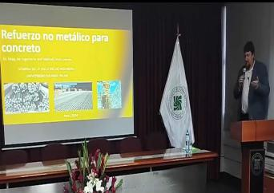
Dr. Mikhail Dmitrusenko Dmitrusenko
Gestión y BIMMetodología BIM en la producción de la construcción y el desarrollo de la documentación organizativo-tecnológica
Dr. Harrison Mesa Hernandez
Gestión y BIMIntegración de BIM/VDC, Lean Construction e Integrated Project Delivery para la gestión moderna de proyectos de construcción
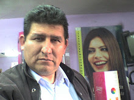
Dr. Rodolfo Ribeck Hurtado
TransportesEmulsiones asfálticas y su aplicación en obras viales
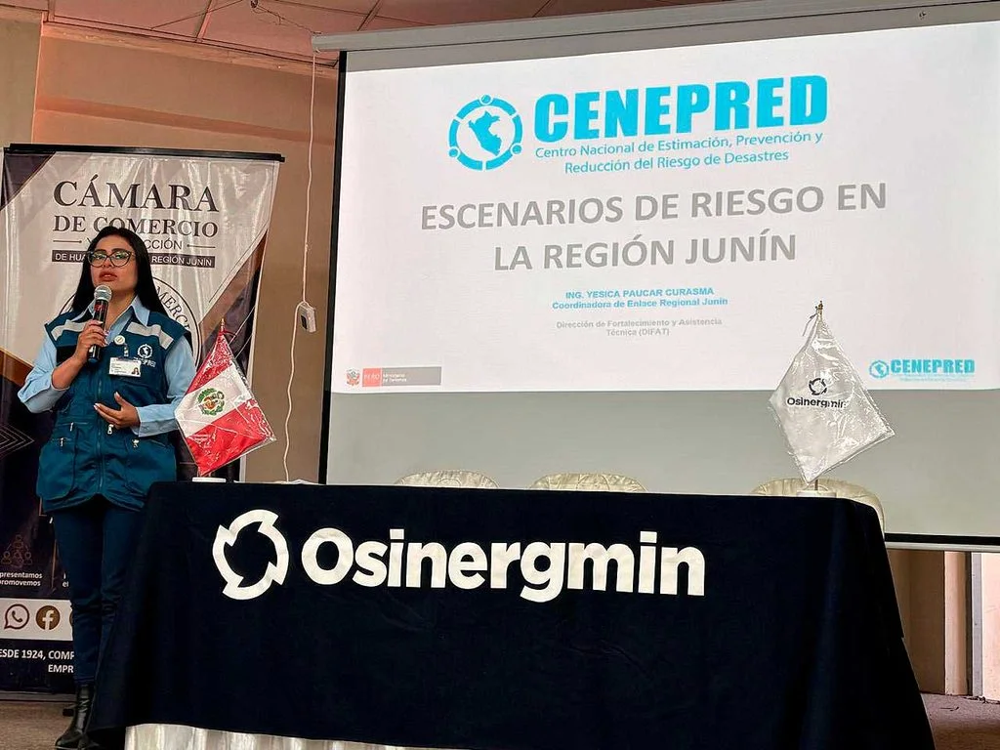
Ing. Yesica Paucar Curasma
Riesgo y sostenibilidadEscenarios de riesgo por fenómenos asociados al fenómeno El Niño
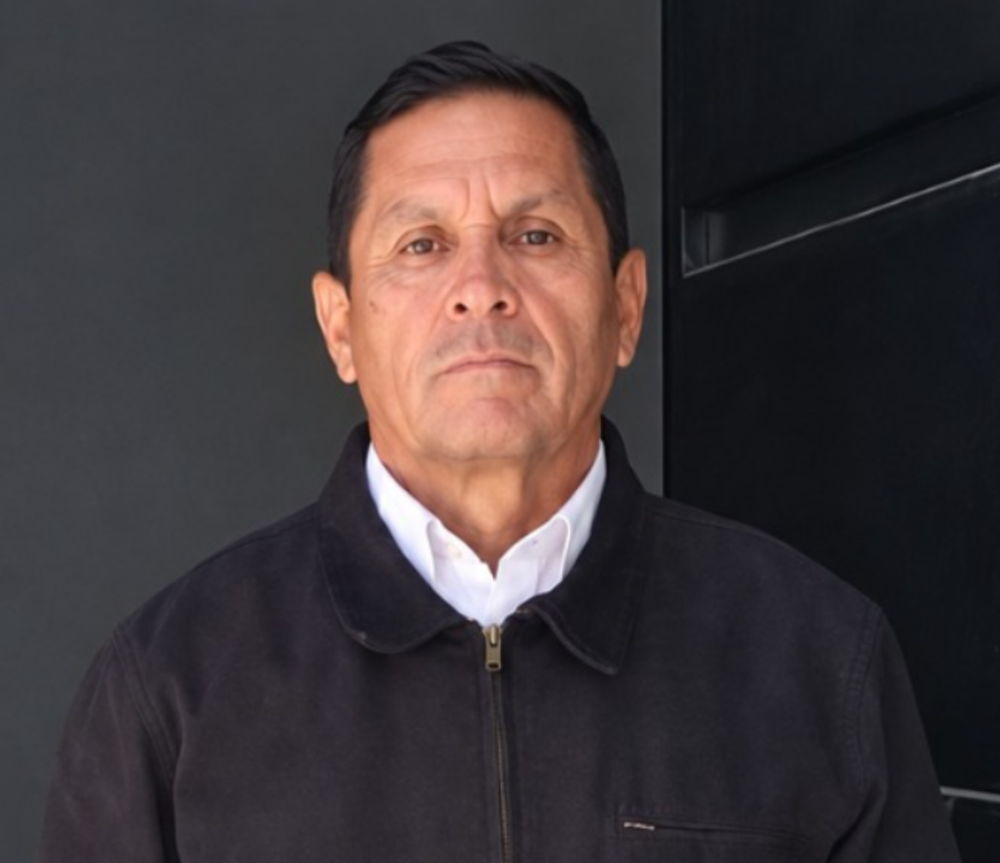
Dr. Ronald Santana Tapia
EstructurasDe la caracterización del material al desempeño sísmico: ladrillos de suelocemento como alternativa para la reconstrucción resiliente de viviendas en el valle del Mantaro
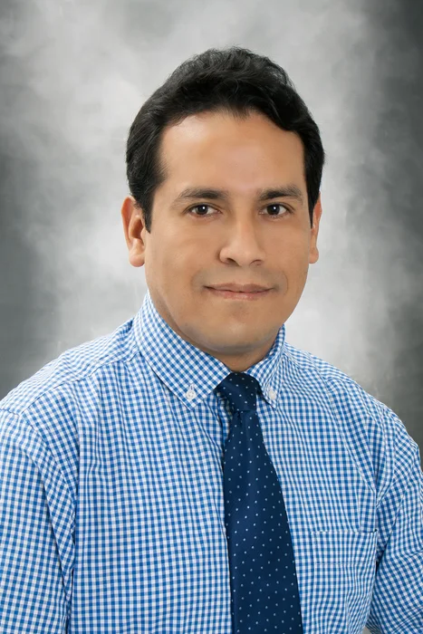
Dr. MSc. Miguel Bendezu
EstructurasLa importancia de la resiliencia sísmica frente a eventos sísmicos recientes alrededor del mundo
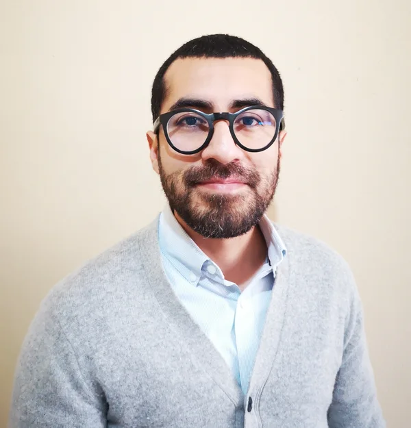
Dr. Carlos Eduardo González Trujillo
GeotecniaLecciones aprendidas y retos para la ingeniería geotécnica sísmica peruana debido al sismo de Chupaca, Junín, 2026
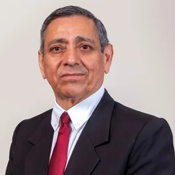
MSc. Ing. Roger Hidalgo García
InvestigaciónUniversidad, investigación y desarrollo
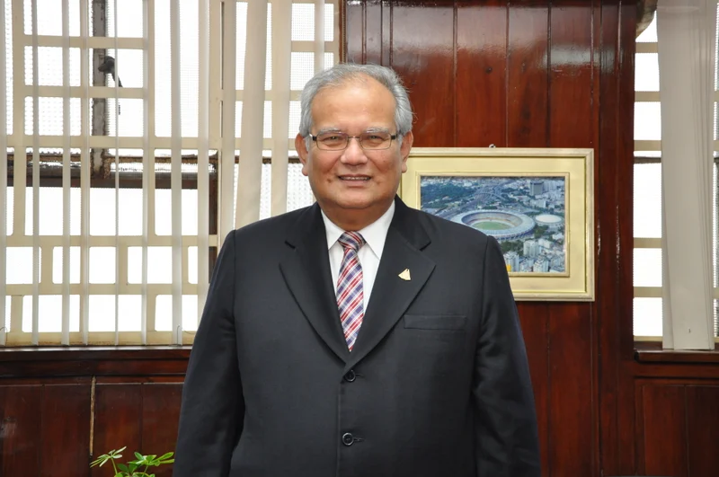
Dr. Jorge Alva Hurtado
GeotecniaEvaluación del potencial de licuación en suelos de la selva peruana
Mg. Edwin Ernesto Lovón Sánchez
TransportesAnálisis del plan maestro de desarrollo ferroviario al 2050
Ing. MBA Adolfo Alex Lazo Hospinal
EstructurasMantenimiento de puentes peatonales y evaluación de su vulnerabilidad estructural mediante ensayos semidestructivos y destructivos frente al fenómeno El Niño
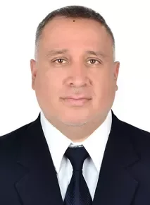
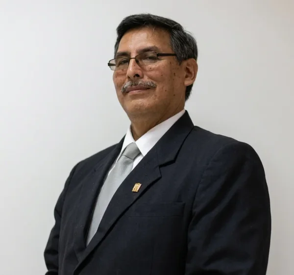
Dr. Jose Matias Leon
TransportesTecnologías ferroviarias y su inclusión en el Perú
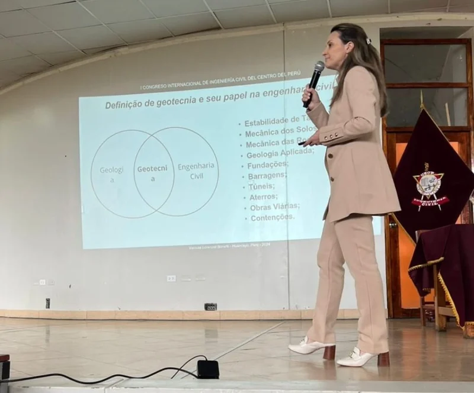
Dra. Vanuza Lorenzet Bonetti
Riesgo y sostenibilidadInfraestructura verde y resiliencia urbana: cómo transformar ciudades medias en ciudades-esponja. Estudio de caso: Brasil y Perú
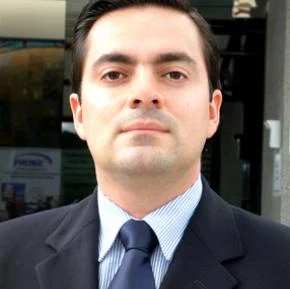
04 / EL ORIGEN DE LO QUE SOMOS
Una historia
con cimientos.
Del nacimiento de la carrera a su consolidación como facultad: una trayectoria construida por su comunidad universitaria.
Explorar la facultad ↗- 2003
Nace la carrera profesional
El 15 y el 30 de diciembre se aprueba la creación y funcionamiento de Ingeniería Civil, inicialmente adscrita a Arquitectura.
- 2009
Una facultad con identidad propia
El 22 de setiembre, la Asamblea Universitaria aprueba que la carrera pase a ser Facultad de Ingeniería Civil.
- 2024
Un encuentro internacional
La UNCP reúne a profesionales en un congreso internacional de ingeniería. Entre las actividades, Vanuza Bonetti comparte su experiencia en un curso de geotecnia en Huancayo.
- 2026
Celebramos el XVII aniversario
La historia continúa con un encuentro de conocimiento, cultura y comunidad en Huancayo.
05 / MEMORIAS DE NUESTRA FACULTAD
Lo vivido
también nos une.
I Congreso Internacional de Ingeniería Civil
16 — 21 de setiembre · Huancayo, PerúPonencias, encuentros y momentos compartidos. Recorre las imágenes de la comunidad de Ingeniería Civil en Huancayo.
4 fotografías · Amplía cada recuerdo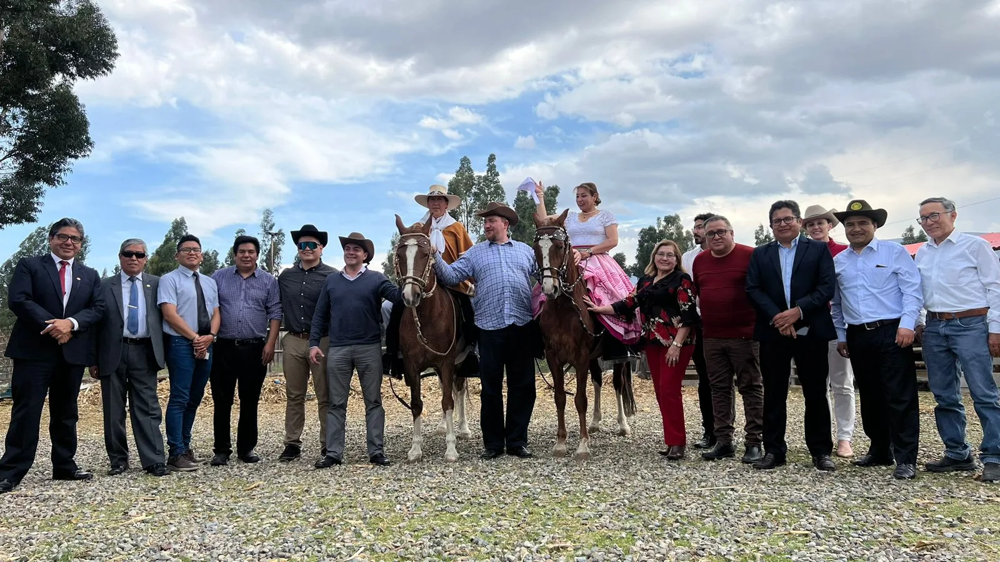
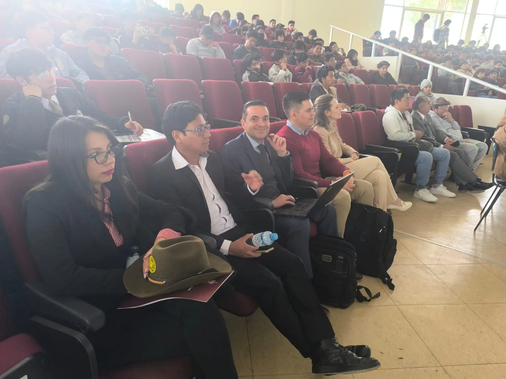
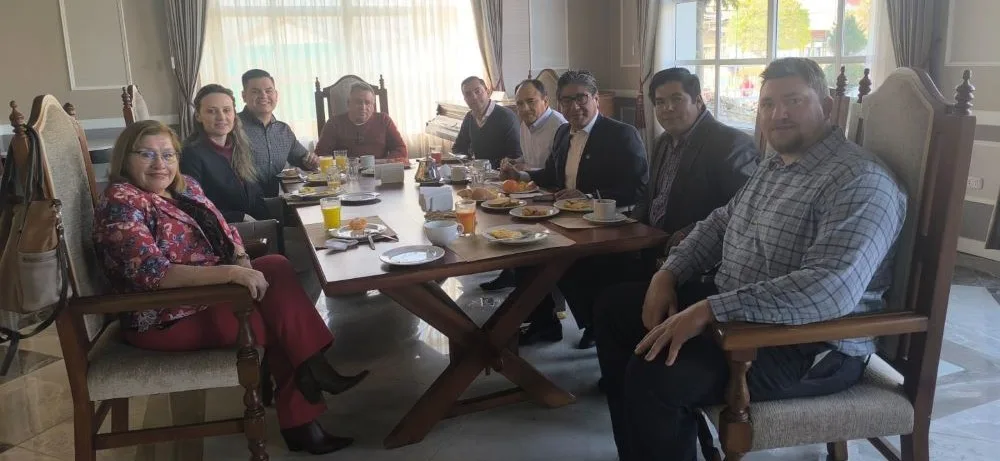
En 2026, volvamos a encontrarnos.
Descubre lo que viene →06 / NOS ENCONTRAMOS EN HUANCAYO
Tu destino:
nuestra universidad.
Prepara tu visita a la ciudad universitaria. Abre la ubicación o consulta la ruta desde Google Maps.
Universidad Nacional
del Centro del Perú
Av. Mariscal Castilla N.º 3909El Tambo, Huancayo · Junín, Perú
Martes 22 de setiembre
Desde las 8:00 a. m.
Para las ponencias del 23 al 25, confirma el ambiente con la organización antes de asistir.
civil@uncp.edu.pe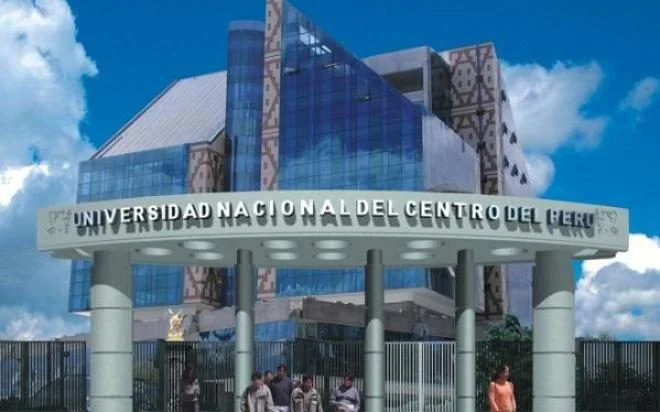
La ruta empieza aquí.
Explora la ubicación sin salir de la página.
También puedes abrir el mapa en una pestaña nueva.
07 / ANTES DE VENIR
Resolvamos
tus dudas.
Los detalles para disfrutar mejor del aniversario.
¿Cuándo es el aniversario?
Del martes 22 al viernes 25 de setiembre de 2026. El acto solemne se celebra el 22 y las jornadas académicas se desarrollan del 23 al 25.
¿Cómo llego a la UNCP?
La ciudad universitaria se encuentra en Av. Mariscal Castilla N.º 3909, El Tambo, Huancayo. Consulta la ruta en Google Maps. El acto solemne se realizará en el Paraninfo N.º 2.
¿Dónde serán las ponencias?
Consulta con la organización el ambiente asignado a las jornadas del 23 al 25 de setiembre. Contacto institucional: civil@uncp.edu.pe.
¿Cómo uso «Mi agenda»?
Pulsa el marcador junto a una actividad para guardarla como favorita. Abre «Mi agenda» para ver tu selección. Desde allí puedes pulsar «Añadir a Google Calendar» en cada actividad. Tus favoritos se conservan en el mismo navegador y dispositivo; para añadirlos a Google debes confirmar «Guardar» en su calendario.
¿Cómo añado una actividad a Google Calendar?
Pulsa «Añadir a Google Calendar». Se abrirá una pestaña con el título, la fecha, la hora de inicio y la ubicación. Inicia sesión en Google si te lo pide, revisa la hora de fin, configura tus avisos y pulsa «Guardar». Se hace una actividad a la vez, sin descargar archivos. Los horarios del programa corresponden a Perú (UTC−5); Google puede mostrarlos en la zona horaria de tu cuenta.
¿Se actualiza mi calendario si cambia el programa?
Las actividades que guardas en Google Calendar son copias personales y no se actualizan automáticamente. Consulta esta página para conocer los cambios y ajusta tu calendario si es necesario.
¿Cómo consulto las condiciones de certificación?
La facultad puede orientarte sobre los requisitos de participación y certificación. Escríbenos a civil@uncp.edu.pe.
XVII ANIVERSARIO · FIC UNCP
Las mejores ideas
se construyen juntos.
22–25 de setiembre de 2026 · Huancayo, Perú